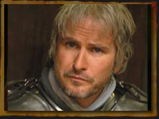

Forums galactiques > Assemblée Galactique : diplomatie officielle > Le lendemain...
| William Respect diplomatique : 772  02/11 ETU 23:08  | Score : 2 Détails Qu'entendez-vous pas 'là', Commandant Angelus ?
L'un des problèmes est bien que vous forcez les autres à adhérer à votre opinion, en prétextant votre opinion supérieure à celle des autres. Qui êtes-vous pour vous penser détenir la vérité et le comportement à adopter ? Vous jugez que nous avons des chaînes, pourtant les vôtres sont tout aussi contraignantes. En l'occurence, il ne s'agît pas d'une révolution. Je ne suis aucunement forcé par ma culture, Commandant Angelus, je fais partie d'une diversité d'opinion. Penser que ne pas vouloir se conformer à votre point de vue est une faiblesse d'esprit doit bien en être une force de mon côté... et du côté de beaucoup de Commandants ici. | ||
| Angelus L Oméga Respect diplomatique : 1305  03/11 ETU 10:37 | Score : 3 Détails Nous détenons la Vérité, parce que nous la ressentons pulser dans nos veines comme une expérience magique et transcendantale.
Et parce que personne n’arrive à contredire notre rhétorique. Bref, et la Raison, et l’expérience nous mette face à ce constat évident : nous détenons la Vérité. Encore une fois, ce débat n’a pas pour sujet de juger nos actions, mais de relancer une remise en cause de la morale. Etrangement, personne n’a pu contre argumenter ma thèse de départ. Ce n’est pas le fait que vous n’adhériez pas à mes opinions qui est pour moi une faiblesse d’esprit, mais plutôt que la raison de ce refus n’est nullement rationnelle. | ||
| Perceval Respect diplomatique : 28  03/11 ETU 10:38 | Score : 6 Détails "C'est pas faux...." dit le chevalier Gallois en hochant la tête...
| ||
| Mablane Respect diplomatique : 1399  03/11 ETU 11:01 | Score : 2 Détails Ah non, là, désolé, mais c'est faux !
Nous avons bel et bien contredit votre thèse ! Mais le problème, c'est que vous refusez de voir nos arguments ! Votre défense actuelle ne tient pas debout ! C'est sans cesse du "c'est tout, j'ai raison, cherchez pas, le Tantrisme est la victoire de la Raison sur l'inconscient..." Non mais oh ! C'est pas bientôt fini cette mascarade ? Pour ne vivre qu'avec la Raison, il faut déjà qu'elle soit bonne ! Or, avec votre "red galaxy", je doute qu'elle le soit... Un être doué de "Raison" n'aurait pas fait un génocide, je pense... Il aurait aussi compris que ce n'est pas par les armes que l'on peut faire accepter son opinion, loin de là... Alors s'il vous plait, avant d'imposer une "philosophie", respectez-la vous-même... | ||
| jokletox Respect diplomatique : 84  03/11 ETU 11:04 | Score : 1 Détails non mais c'est pas faux, c'est sa botte secrete. C'est juste pour ne pas dire qu'il n'a rien compris. Enfin si j'ai bien compris...
| ||
| Angelus L Oméga Respect diplomatique : 1305 03/11 ETU 11:13 | Score : 1 Détails Wow Mablane, votre raisonnement me sidère tant il est recherché.
« C’est pas bien ! Vous êtes des vilains méchants tout poilus ! » | ||
| Steam Respect diplomatique : 186  03/11 ETU 11:16 | Score : 0 Détails Ca c'est le votre commandant Angelus...
C'est pas nous qui avons attaqué les "barbares"... | ||
| Chiana Respect diplomatique : 1345  03/11 ETU 12:12 | Score : 3 Détails Versons une larme ensemble alors...
| ||
| jokletox Respect diplomatique : 84 03/11 ETU 12:14 | Score : 0 Détails Oui mais juste une, alors, sinon ca va faire trop "résistant qui pleure tout le temps".
| ||
| Hasdrubal Respect diplomatique : 113  03/11 ETU 12:22 | Score : 0 Détails Mais vous êtes des résistants qui pleure tout le t....heu... jamais!
(à mi-voix)Il faut pas casser leur enthousiasme après on pourra plus s'amuser! | ||
| jokletox Respect diplomatique : 84 03/11 ETU 12:28 | Score : 0 Détails Ce n'est pas parce que je m'amuse à vanner les Red que je me plaints. Honnetement, je ne me souviens pas avoir pleuré pour ce qui m'est arrivé. Le dénoncer, oui, le critiquer, oui, mais me lamenter non.
| ||
| William Respect diplomatique : 772 03/11 ETU 14:06 | Score : 1 Détails Alors j'en déduis, Commandant Angelus, que votre aveuglement est tel qu'il est inutile de discuter avec vous. Une discussion se projette par définition dans toutes les mentalités mises à contribution. Si vous n'acceptez pas d'écouter nos arguments, comment voulez-vous que le débat avance ?
D'autre part, ce n'est pas parce que vous ressentez quelque chose que c'est la vérité. Vous qui parliez de Raison, vous êtes ici à l'opposé, puisque vous parlez de sensations. Où est la logique dans votre discours ? | ||
| Angelus L Oméga Respect diplomatique : 1305 03/11 ETU 17:17 | Score : 1 Détails Et la Raison, et les sensations prouvent notre thèse, c’est ça qui est magnifique ! Comme le disais Mata Hari, c’est le temps de la Réconcilation.
Avez-vous vu des arguments dans le discours de Mablane ? Pas moi. Je n’ai vu que des affirmations du type « C’est faux », « C’est de la foutaise ! », « C’est une mascarade », « Vous êtes dans l’erreur un point c’est tout ». Je n’ai pas vu de raisonnement, donc, je ne peut y répondre de manière logique. | ||
| Steam Respect diplomatique : 186 03/11 ETU 17:21 | Score : 0 Détails Bon écoutez...
On a perdu planètes et flottes, mais pour vous dire franchement: ON S'EN FOUT! Nous voulons juste être libre de choisir d'adhérer au tantrisme ou pas... Ensuite, peu importe... Si nous récupérons nos systèmes tant mieux, sinon tant pis. Regardez bien qui sont ceux qui n'essaient pas de comprendre... Bien respectueusement... Même si je me demande si je devrais l'être enrvers des personnes ne respectant pas nos idéaux. Steam, votre recherchée a 50 Mo leems :) | ||
| Mablane Respect diplomatique : 1399 03/11 ETU 17:27 | Score : 2 Détails Enfin un raisonnement intéressant ! "On s'en fout !" C'est vrai ça !
D'ailleurs, cher Angelus, je n'ai pas donné d'arguments car c'est fait exprès... Je vous ai dit que j'abandonnais l'espoir de vous convaincre ! Mais si vraiment vous voulez des arguments, lisez l'antique texte intitutlé "de l'inconscient et de l'empire des sens" ! Là, j'ai développé mon idée, et là, j'ai exposé des arguments. Cependant, désolé, mais j'ai pas le courage de les réexposer ici... Mablane, votre recherché à je-sais-pas-combien-de-leems... | ||
| Le Poète Disparu Respect diplomatique : 116  03/11 ETU 17:49 | Score : 3 Détails Le Poète Disparu avait quitté l'AG depuis quelques temps, et à son retour, il fut surpris de l'évolution de la situation. Il ne comprenait pas tout... L'empire, semblait-il; avit lancé une campagne d'adhésion au tantrisme assez importante. Seulement, l'adhésion semblait être obligatoire. Bien qu'il ait trouvé l'Empire adouci ces derniers temps, il fallait reconnaitre que la mesure était loin d'être "fair". C'est pourquoi il réagit:
Parbleu, que ce passe-t-il? des recherches, des mises à prix; Où sommes-nous? L'Empire aurait-il changé de main, passant à mon Pote Paul, ou autre tyran sanguinaire? Eclairez-moi, pour l'amour de Janus-Jana(de Dieu), où va la galaxie? Où est passé la liberté, le plaisir tantrique, la rougeur sexy de nos imperatrices? Que font ici les cris, les insultes, les combats, les chasseurs de têtes? Mablane, qu'est-ce donc que cette histoire? Une blague qu'un de vos beau discour m'aurait fait gober? Un cauchemar dont vous êtes l'un des personnages, persécutés par ses sinistres bourreaux, dont les noms sont irrévélables? Aidez-moi, aidez-vous, aidez la galaxie en stoppant ce stupide canular dont nous sommes tous les victimes! | ||
| Mablane Respect diplomatique : 1399 03/11 ETU 18:00 | Score : 3 Détails Bon... On va faire simple...
Disons que l'Empire a eu le soudain désir d'exterminer tous les commandants non-citoyens de sa "majesté Janus-Jana"... Sachant qu'ils sont nombreux, vous aurez compris qu'il y a eu, et qu'il y aura encore, beaucoup de morts... Cette opération, sombrement baptisée "red galaxy", a trois objectifs majeurs : 1) Agrandir son territoire quitte à tuer des innocents, 2) A forcer les survivants à devenir serviteurs du tantrisme, 3) Foutre le bordel, juste histoire de foutre le bordel. Vous pouvez désormais comprendre pourquoi ceux que l'on appelle désormais "résistants" se font rares et demeurent persécutés... C'est pour cette raison que ma coalition, la Panunivers, a décidé d'accueillir les derniers "résistants", afin de ne pas combattre par les armes (ce ne serait que trop inutile), mais par la plume. En effet, nous ne voulons pas nous laisser faire comme ça. La galaxie ne peut tolérer un tel génocide ! Voilà ! | ||
| William Respect diplomatique : 772 03/11 ETU 18:05 | Score : 1 Détails Vous n'avez pas vu les nouvelles, Poète Disparu ? Les Red Tantras ont décidé de créer un Gouvernement, puis de destituer tous les Commandants qui n'y adhèreraient pas, qu'ils aient été amis, neutres ou ennemis.
Mais, fort heureusement, vous avez encore une chance d'être pardonné si vous n'avez pas encore stipulé vouloir être Citoyen. En effet, vous pouvez demander une Indulgence divine et accéder au statut de Citoyen pour que la vendetta s'arrête. Et comble de fortune, si vous avez eu des relations privilégiées avec les Red Tantras, il y a une petite chance pour qu'il vous rende quelques-unes de vos planètes. Ah, il semblerait que le Commandant Mablane ait parlé plus vite que moi. Autre précision, on appelle aussi barbares les résistants, puisqu'ils sont étrangers aux Red Tantras (autant de nation que de compréhension, d'ailleurs, puisqu'ils n'arrivent pas à intégrer ce qu'on leur énonce). | ||
| Le Poète Disparu Respect diplomatique : 116 03/11 ETU 18:12 | Score : 0 Détails Le Poète Disparu avait toujours apprécié ces Hommes, forts de leurs valeurs, de leurs droits et de leurs devoirs. Bien qu'il ne fasse plus parti de la Résistance, il ne pouvait s'empécher de les encourager, de les soutenir et même de les envier.
Et, tout bas, il scandait les slogans de ceux, qui, dans la bataille, meurent, et ne se rendent pas. | ||
| William Respect diplomatique : 772 03/11 ETU 18:15 | Score : 0 Détails Vous devenez citoyen, Poète Disparu ? Car il n'y a malheureusement aucune demi-mesure pour les Red Tantras, maintenant. Leur message est limpide : les citoyens dirigent et les barbares sont relégués au rang d'Ex-Dirigeant.
|
Forums galactiques > Assemblée Galactique : diplomatie officielle > Le lendemain...